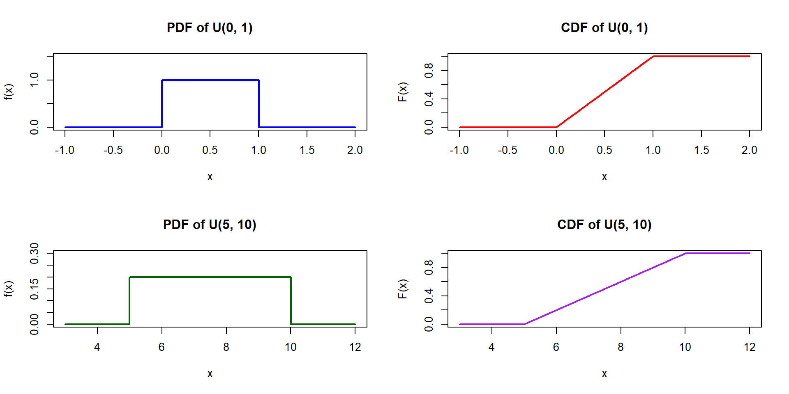
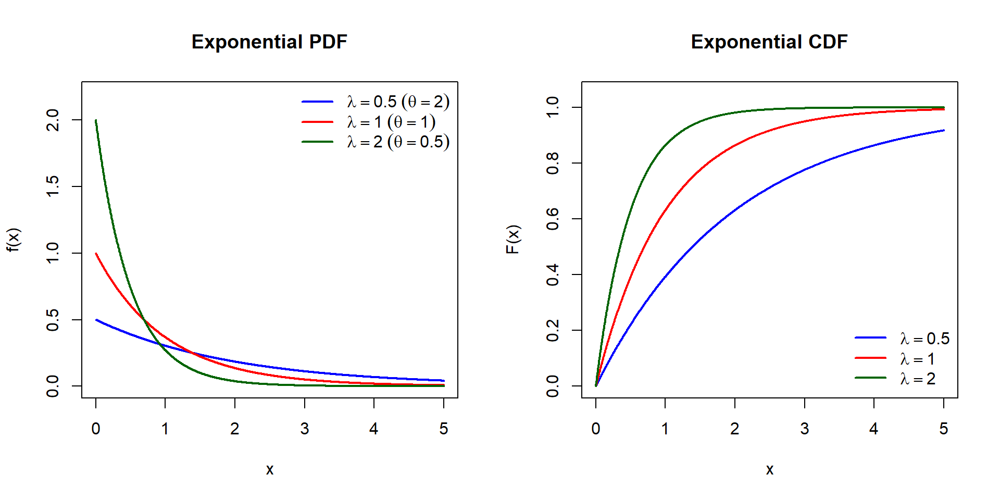

2026-11-01
CLO 1: APPLY the concept of probability in relation to the concept of sampling error. (C3)
CLO 2: EXPLAIN the concept of point and confidence interval estimation for given parameters. (C2, A4)
CLO 3: DESIGN appropriate hypothesis testing based on given statistical problems. (C5, P7)
Parametric Distributions:
Uniform
Exponential
Chi Squared
Gamma
Normal
Understand the use of continuous distributions
Differentiate situations to use continuous distributions
Uniform distribution
Exponential distribution
Gamma distribution
Chi-Square distribution
Normal distribution
The continuous uniform distribution is the statistical embodiment of complete uncertainty within known boundaries or pure, steady randomness across an interval.
You reach for it when you know a variable cannot fall below \(a\) or exceed \(b\), but you have zero reason to believe any one sub-interval is more likely than another.
A service runs on a strict schedule (e.g., a train departures every 20 minutes, a factory machine cycles every 60 seconds), but a user or component arrives completely independently of that schedule.
Digital sensors, timers, or scales report values to a specific resolution (e.g., a temperature sensor rounds to the nearest \(0.1^\circ\text{C}\)).
In supply chain capacity planning, fuel pricing, or facility location problems, future costs or demands are uncertain.
E.g.: A supply chain analyst must build a warehouse network where future transport costs per ton-mile are expected to fall anywhere between \(\$0.12\) and \(\$0.18\). This uniform uncertainty envelope to solve for a “minimax regret” or robust solution that performs adequately across the entire spectrum.
When thousands of EV owners plug in their cars after work, allowing all chargers to switch on simultaneously at exactly 6:00 PM or midnight (when off-peak tariffs start) can blow neighborhood transformers. Charging software applies a randomized delay:
\[\Delta t \sim U(0, 30) \text{ minutes}\]
Each car starts charging uniformly between 0 and 30 minutes after the scheduled hour, flattening the sudden electrical surge into a manageable ramp.A continuous rv \(X\) with a probability density function (pdf) given by
\[f(x) = \frac{1}{b - a} ; \quad a \le X \le b\] is said to follow a Uniform distribution, denoted \(U(a, b)\).
(Refer to visual rectangular pdf plot and linear increasing cdf plot from \(a\) to \(b\))

If random variable \(X\) has a uniform distribution with parameter \(a, b\), \(U(a, b)\), then:
\[M_X(t) = E(e^{tX}) = \frac{e^{tb} - e^{ta}}{t(b - a)}\]
\[\mu = E(X) = \frac{(a + b)}{2}\]
\[\sigma^2 = \frac{(b - a)^2}{12}\]
\[f(x) = \frac{1}{b - a}, \quad a \le x \le b.\] \[\begin{align*} M_X(t) &= E(e^{tX}) = \int_{a}^{b} e^{tX} f(x) dx \\ &= \int_{a}^{b} e^{tX} \frac{1}{(b - a)} dx \\ &= \frac{1}{b - a} \int_{a}^{b} e^{tX} dx \\ &= \frac{1}{(b - a)} \left[ \frac{e^{tX}}{t} \right]_{a}^{b} = \frac{e^{tb} - e^{ta}}{t(b - a)} \end{align*}\]
\[f(x) = \frac{1}{b - a}, \quad a \le x \le b\] \[\begin{align*} \mu &= E(x) = \int_{a}^{b} x f(x) \ dx \\ &= \int_{a}^{b} x \cdot \frac{1}{b - a} \ dx \\ &= \frac{1}{b - a} \int_{a}^{b} x \ dx = \frac{1}{b - a} \left[ \frac{x^2}{2} \right]_{a}^{b} \\ &= \frac{1}{2(b - a)} [x^2]_{a}^{b} \\ &= \frac{b^2 - a^2}{2(b - a)} \\ &= \frac{(b - a)(b + a)}{2(b - a)} = \frac{b + a}{2} \end{align*}\]
\[\sigma^2 = E(x^2) - (E(x))^2,\]
\[\begin{align*} E(x^2) &= \int_{a}^{b} x^2 f(x) \ dx = \frac{1}{b - a} \int_{a}^{b} x^2 \ dx \\ &= \frac{1}{b - a} \left[ \frac{x^3}{3} \right]_{a}^{b} = \frac{1}{3(b - a)} [x^3]_{a}^{b} \\ &= \frac{b^3 - a^3}{3(b - a)} \\ &= \frac{(b - a)(b^2 + ab + a^2)}{3(b - a)} \\ &= \frac{b^2 + ab + a^2}{3}, \text{ then} \end{align*}\]
\[\begin{align*} \sigma^2 &= \frac{b^2 + ab + a^2}{3} - \left( \frac{b + a}{2} \right)^2 \\ &= \frac{b^2 + ab + a^2}{3} - \frac{b^2 + 2ab + a^2}{4} \\ &= \frac{4b^2 + 4ab + 4a^2 - 3b^2 - 6ab - 3a^2}{12} \\ &= \frac{b^2 - 2ab + a^2}{12} = \frac{(b - a)^2}{12} \end{align*}\]
Let \(X\) have the PDF
\[f(x) = \frac{1}{100}, \quad 0 < x < 100\] So \(X \sim U(0, 100)\). Find the mean and variance.
Solution: Identify the parameters: \(a = 0\) and \(b = 100\).
Mean: \[\mu = \frac{a + b}{2} = \frac{0 + 100}{2} = 50\]
Variance: \[\sigma^2 = \frac{(b - a)^2}{12} = \frac{(100 - 0)^2}{12} = \frac{10000}{12} \approx 833.33\]
If \(X\) is uniformly distributed over \((0, 10)\), calculate the probability that:
\(X < 3\)
\(X > 6\)
\(3 < X < 8\)
Buses arrive at a specified stop at 15-minute intervals starting at 7 A.M. That is, they arrive at 7:00, 7:15, 7:30, 7:45, and so on. If a passenger arrives at the stop at a time that is uniformly distributed between 7:00 and 7:30, find the probability that he waits:
less than 5 minutes for a bus.
more than 10 minutes for a bus.

If \(X\) is a random variable having Exponential distribution with parameter (\(\theta\)), then:
MGF: \[M_X(t) = \frac{1}{1 - \theta t}\]
Mean: \[\mu = E[X] = \theta\]
Variance: \[\sigma^2 = Var[X] = \theta^2\]
\[\begin{align*} M_X(t) &= E(e^{tX}) = \int_{0}^{\infty} e^{tX} \frac{1}{\theta} e^{-x/\theta} \ dx \\ &= \frac{1}{\theta} \int_{0}^{\infty} e^{-x(\frac{1}{\theta} - t)} dx \\ &= \frac{1}{\theta} \int_{0}^{\infty} e^{-x(\frac{1}{\theta} - t)} \left( \frac{-(\frac{1}{\theta} - t)}{-(\frac{1}{\theta} - t)} \right) dx \\ &= \frac{\frac{1}{\theta}}{(\frac{1}{\theta} - t)} \int_{0}^{\infty} e^{-x(\frac{1}{\theta} - t)} \left( -(\frac{1}{\theta} - t) \right) dx \\ &= -\frac{1}{(1 - \theta t)} \left[ e^{-x(\frac{1}{\theta} - t)} \right]_{0}^{\infty} \\ &= -\frac{1}{(1 - \theta t)} [0 - 1] = \frac{1}{(1 - \theta t)} \end{align*}\]
The \(k\)-th raw moment is given by evaluating the \(k\)-th derivative of the MGF at \(t = 0\):
\[E[X^k] = M_X^{(k)}(0)\] To find the first moment (the mean, \(E[X]\)), take the first derivative of \(M_X(t)\) with respect to \(t\) using the chain rule: \[ \begin{aligned} M_X'(t) &= \frac{d}{dt} \left[ (1 - \theta t)^{-1} \right] \\ &= -1 \cdot (1 - \theta t)^{-2} \cdot \frac{d}{dt}(1 - \theta t) \\ &= -1 \cdot (1 - \theta t)^{-2} \cdot (-\theta) \\ &= \theta (1 - \theta t)^{-2} = \frac{\theta}{(1 - \theta t)^2} \end{aligned} \] Evaluate at \(t = 0\)Set \(t = 0\) to obtain the mean \(\mu = E[X]\): \[ \begin{aligned} E[X] &= M_X'(0) \\ &= \frac{\theta}{(1 - \theta \cdot 0)^2} = \frac{\theta}{1^2} \\ &= \theta \end{aligned} \]
Let \(X \sim \text{Exp}(\theta)\) with probability density function: \[f(x) = \frac{1}{\theta} e^{-x/\theta}, \quad x \ge 0 \quad (\theta > 0)\] The variance is defined as: \[\text{Var}(X) = E[X^2] - (E[X])^2\]
Step 1: Find the Second Derivative of \(M_X(t)\)
From the previous derivation, the moment generating function and its first derivative are: \[M_X(t) = (1 - \theta t)^{-1}, \quad t < \frac{1}{\theta}\] \[M_X'(t) = \theta(1 - \theta t)^{-2}\] To find the second raw moment \(E[X^2]\), differentiate \(M_X'(t)\) with respect to \(t\) using the chain rule: \[ \begin{aligned} M_X''(t) &= \frac{d}{dt} \left[ \theta (1 - \theta t)^{-2} \right] \\ &= \theta \cdot (-2)(1 - \theta t)^{-3} \cdot \frac{d}{dt}(1 - \theta t) \\ &= \theta \cdot (-2)(1 - \theta t)^{-3} \cdot (-\theta) \\ &= 2\theta^2 (1 - \theta t)^{-3} = \frac{2\theta^2}{(1 - \theta t)^3} \end{aligned} \]
Step 2: Evaluate \(E[X^2]\) at \(t = 0\) \[ \begin{aligned} E[X^2] &= M_X''(0) \\ &= \frac{2\theta^2}{(1 - \theta \cdot 0)^3} \\ &= \frac{2\theta^2}{1^3} \\ &= 2\theta^2 \end{aligned} \] Step 3: Compute \(\text{Var}(X)\)Substitute \(E[X] = \theta\) and \(E[X^2] = 2\theta^2\) into the variance formula: \[ \begin{aligned} \text{Var}(X) &= E[X^2] - (E[X])^2 \\ &= 2\theta^2 - (\theta)^2 \\ &= 2\theta^2 - \theta^2 \\ &= \theta^2 \end{aligned} \] (Note: In the rate parameterization where \(\lambda = \frac{1}{\theta}\) and \(M_X(t) = \left(1 - \frac{t}{\lambda}\right)^{-1}\): \[M_X''(t) = \frac{2}{\lambda^2}\left(1 - \frac{t}{\lambda}\right)^{-3} \implies E[X^2] = M_X''(0) = \frac{2}{\lambda^2}\] \[\text{Var}(X) = \frac{2}{\lambda^2} - \left(\frac{1}{\lambda}\right)^2 = \frac{1}{\lambda^2}\]
Let \(X\) be the rv the length of time in minutes between calls to 911 in a small city. Suppose the reasonable probability model for \(X\) is given by \[f(x) = 1/20 e^{-x/20}, \quad 0 \le x < \infty\]
Show that \[\int_{S} f(x) dx = 1\]
Show \(P(X > 20) = 0.368\)
Special relationship: Exponential dist can be derived from Poisson rv.
Recall: Poisson rv is defined as the number of events in a unit interval e.g. the number of customers arriving in one hour.
Interval \(\rightarrow\) The time/space/distance.
The unit between one event to next event is also another random variable of interest, and because the distance / time/space are continuous variables, their distribution is continuous distribution.
Suppose we let \(\rightarrow\) X : No occurrences in a unit interval. Then \(X\) can be described by a Poisson with mean \(\lambda\). And let Y : Waiting time until the first changes /occurrences.
Then \(Y\) is a continuous rv which can be described by an Exponential distribution. \(Y \sim \exp(1/\lambda)\), and \(E(Y) = 1/\lambda\).
NOTE: Earlier we use \(\theta\), where \(\theta = 1/\lambda\)
e.g. if \(\lambda = 5\) per minute, then \(1/\lambda = \theta = 1/5\).
This relationship is proven by the following theorem:
THM: Suppose a series of events satisfying the Poisson model are occurring at a rate of \(\lambda\) per unit time.
Let rv \(Y\) be “the interval between consecutive events”.
Then \(Y\) has exponential distribution with mean \(E(Y) = 1/\lambda\)
\[f(y) = \lambda e^{-\lambda y}, \quad y > 0\]
Customer arrive in a certain shop according to an approximate Poisson process at a mean rate of 20 per hour. What is the probability that the shopkeeper will have to wait more than 5 minutes for the arrival of the first customer?
Solution
Let \(x\) denote the waiting time in minutes until the first customer arrives and note that \(\lambda = \frac{1}{3}\) is the expected number of arrivals per minute.
Thus, Code snippet# Expected number of arrivals per minute (lambda) = 20 arrivals / 60 mins = 1/3
We want P(X > 5)
Suppose that the length of a phone call in minutes is an exponential random variable with parameter \(\lambda = \frac{1}{12}\).If someone arrives immediately ahead of you at a public telephone booth, find the probability that you will have to wait
more than 11 minutes;
between 11 and 18 minutes.
Suppose that the total mileage an electric vehicle (EV) battery pack can operate before experiencing critical cell failure is exponentially distributed with a mean lifespan of \(\theta = 150{,}000\) miles (or failure rate \(\lambda = \frac{1}{150{,}000}\) per mile). A logistics delivery company purchases a pre-owned EV fleet vehicle that has already accumulated \(100{,}000\) miles without any battery failure.
Using the memoryless property of the Exponential distribution, find the probability that this vehicle can complete a long-haul cross-country commercial route of \(5{,}000\) miles without requiring a battery pack replacement.
How does this probability compare to the probability that a brand-new EV battery completes the same \(5{,}000\)-mile trip?
What can be said if the true underlying lifespan distribution of the EV battery pack is not exponential (e.g., following a Weibull distribution with an increasing failure rate due to electrochemical wear and aging)?